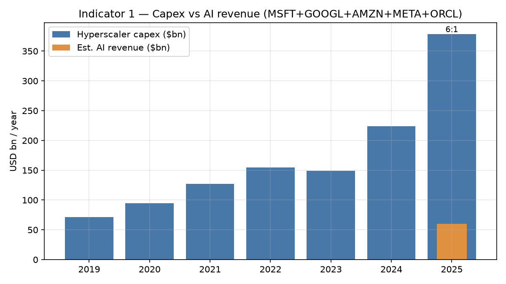
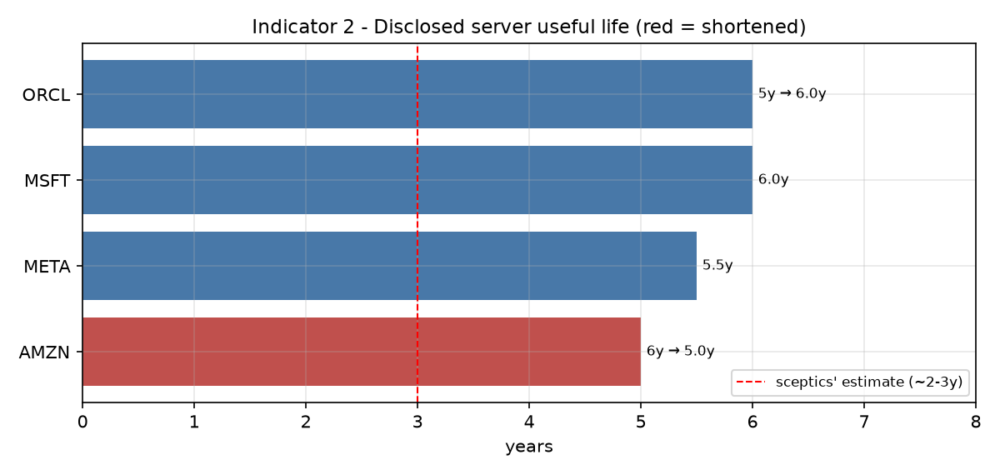
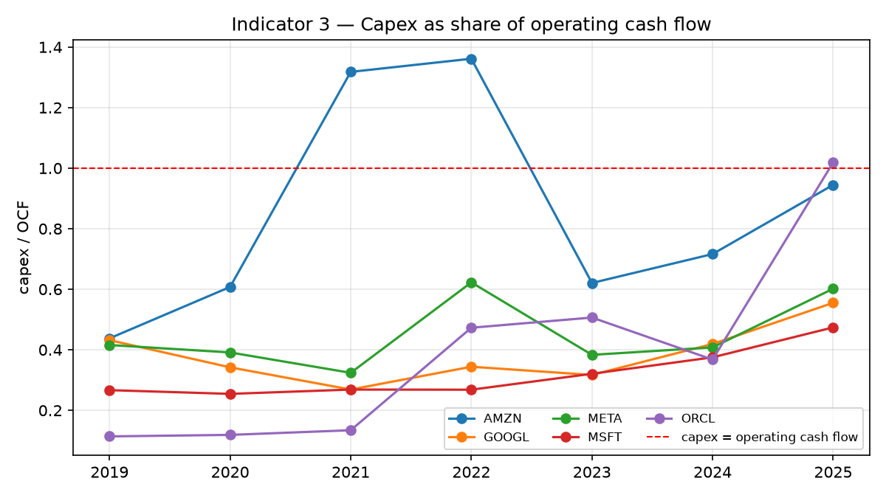
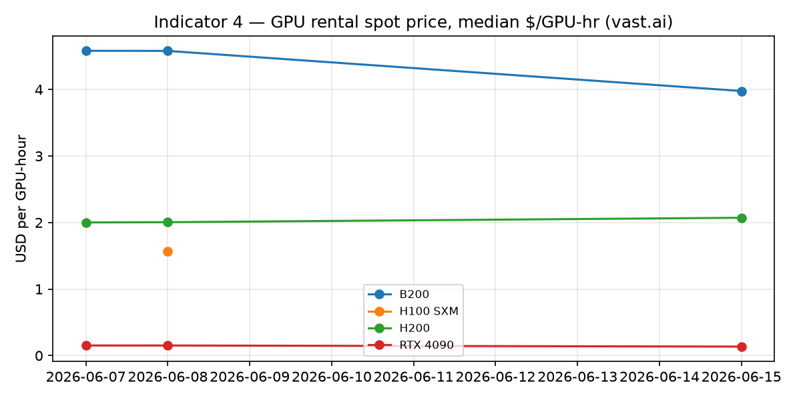
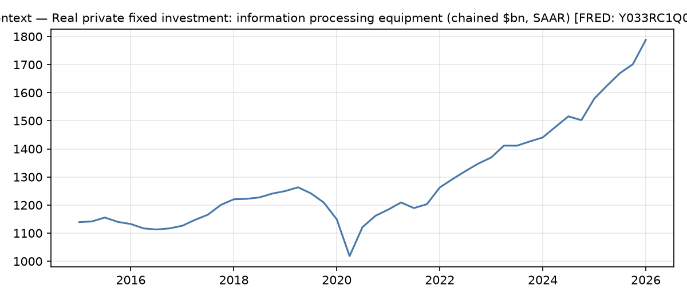
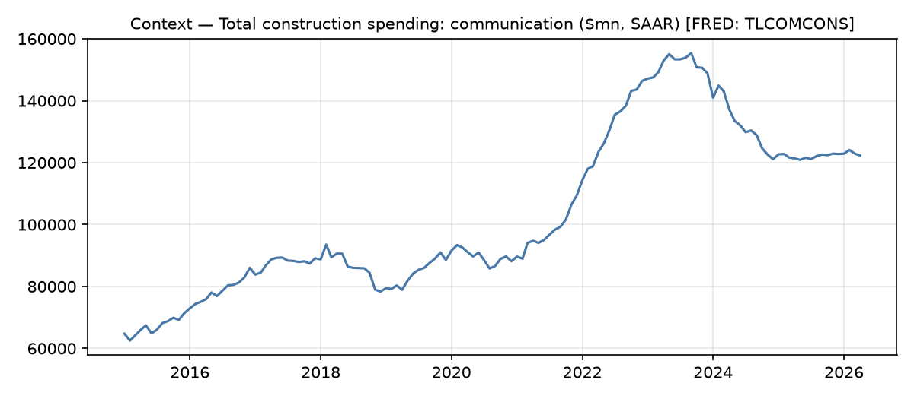

Last refresh: 2026-06-15 · auto-updated · source & methodology
Four falsifiable indicators of whether the AI investment boom is being financed in a way that can absorb disappointment. Companion to chapter 9 of The Price of Thinking. Data: SEC EDGAR, FRED, vast.ai.






© Allan Pedersen · MIT licence · indicator definitions and falsification conditions in the README.